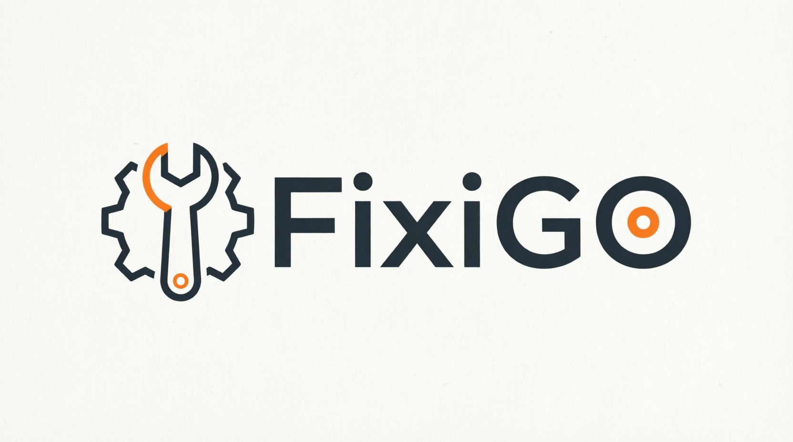
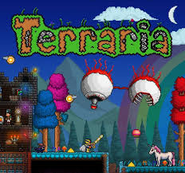
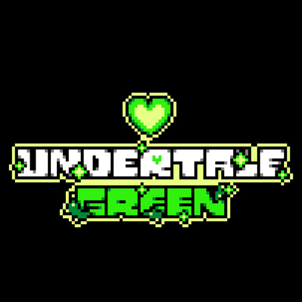

FixiGO
CIS-аналог Steam на базе GitHub для свободного размещения программ. Идея ближе к площадке наподобие Modrinth, только для приложений, утилит и самостоятельных релизов.
Здесь будет расти вторая ветка бренда Fixified: desktop-инструменты, utility-паки, экспериментальные релизы и отдельные продукты.
Здесь уже собраны мои текущие наработки и большие идеи. Пока проекты ещё не готовы к релизу, но у каждого уже есть своё направление и своя роль.

CIS-аналог Steam на базе GitHub для свободного размещения программ. Идея ближе к площадке наподобие Modrinth, только для приложений, утилит и самостоятельных релизов.

Попытка возродить консольную версию Terraria и вернуть её атмосферу в отдельном переосмысленном проекте. Это история про сохранение ощущения старой версии, а не просто копирование.

Проект игры про зелёную душу доброты. Это ремастер-направление с собственным настроением, визуалом и попыткой раскрыть отдельную историю внутри вселенной Undertale.